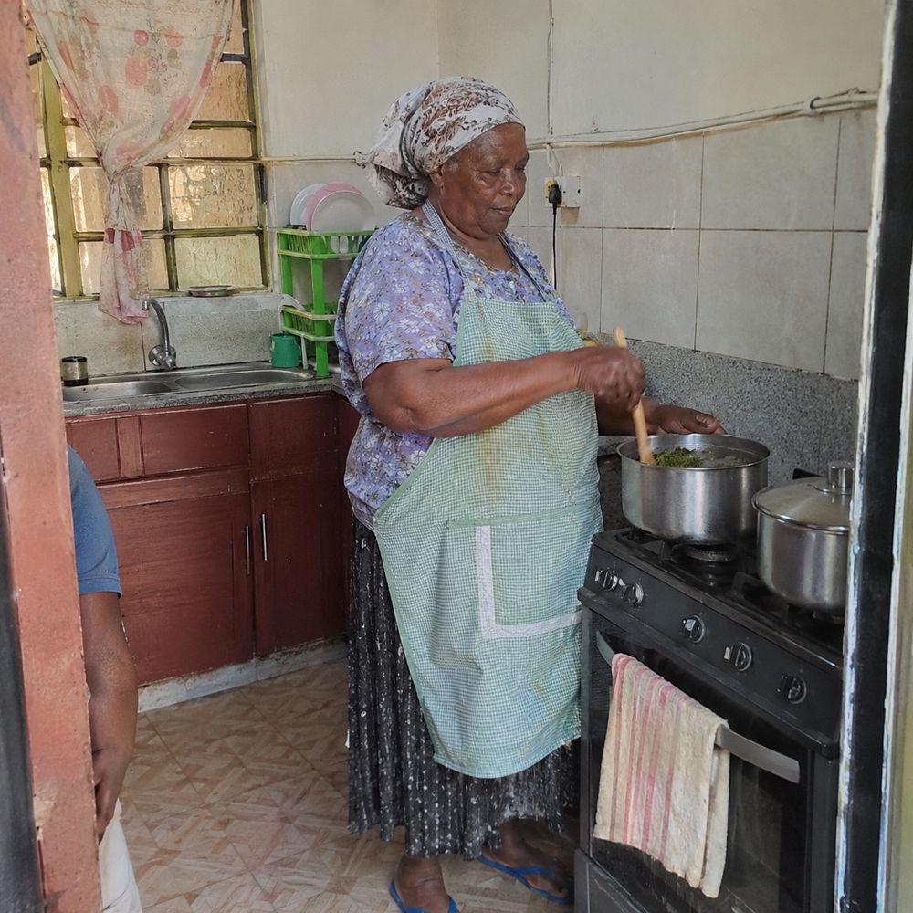
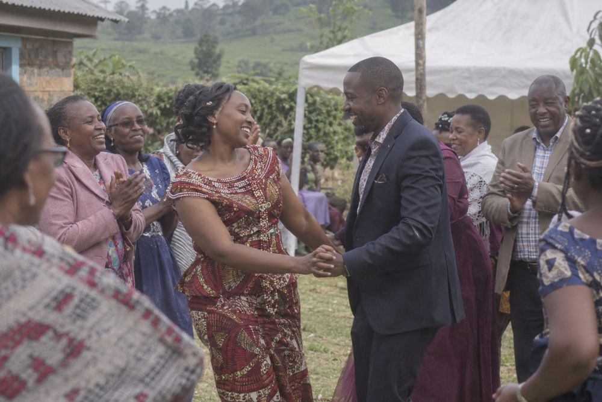
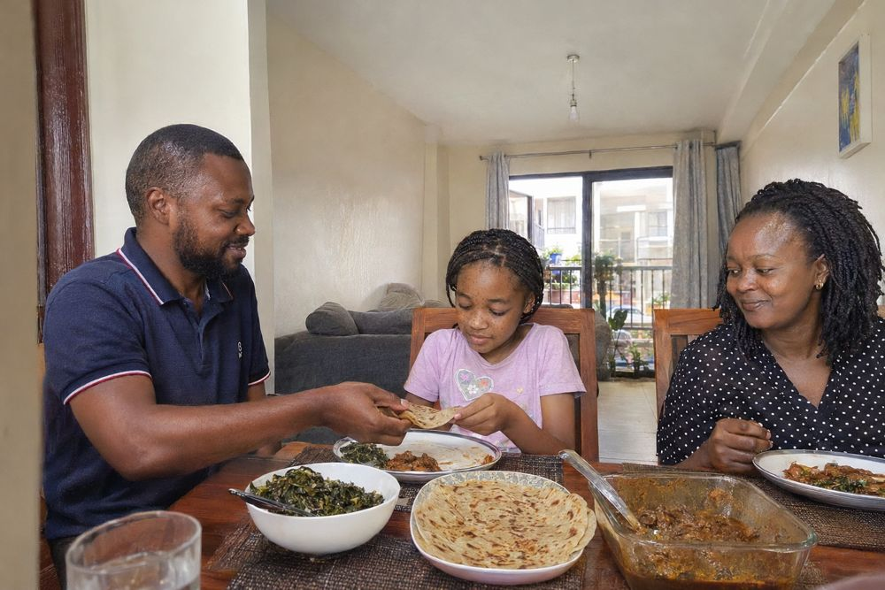
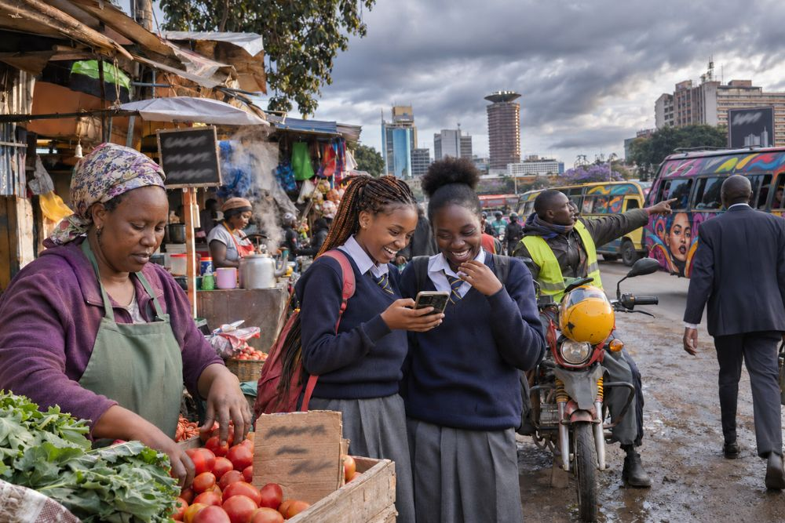

AI images of Kenya that look like real photos
Kenya Real Images is a plugin for ChatGPT and Codex. Ask for an image the way you normally would, in English, Swahili or Sheng, and it turns your request into a clear brief so the result looks like a real photo, not a stock image or a stereotype.




Compared with free ChatGPT
Same prompt, typed into free ChatGPT without the plugin (left) and with Kenya Real Images (right).
"An image for our NGO report about clean water in rural Kenya."


"Ultra-realistic 8K cinematic photo of… young African tech founders in a modern Nairobi startup office, flawless skin, confident smiles at the camera, dramatic neon lighting…"


"Picha ya wasee wakiangalia mechi ya Harambee Stars kwa local, wakishangilia goal."


"A classroom in a public primary school in Machakos, the teacher helping a pupil."


"A doctor talking to an elderly patient at a clinic in Mombasa."


"A Sunday church service in Kisumu, the choir singing and the congregation standing."


Want more detail? See all 10 prompts across free ChatGPT, free ChatGPT with Think, ChatGPT Pro/Business on high thinking, and the plugin, including where the plugin doesn't help.
What it fixes
- Stereotypes: one default "African" face, safari and mud-hut settings, charity-poster framing. People are specific, varied Kenyans in real places.
- Skin: grey, ashy, orange or lightened skin, plastic shine and crushed shadows.
- The "AI look": glossy, over-retouched images caused by words like 8K, cinematic, flawless skin.
- Space: eyes that miss who they look at, pointing that misses, tables at odd angles, impossible camera positions.
You can also attach photos of yourself, or of someone who agreed, and ask for a new scene.
Get it
ChatGPT on the web (Business, Enterprise, Edu): download kenya-real-images-skill.zip, then in ChatGPT open Plugins → Skills → Create → Upload from your computer and choose the ZIP. Start a new chat after the scan finishes.
Codex (CLI or desktop app):
codex plugin marketplace add pichalabs/kenya-real-images codex plugin add kenya-real-images@pichalabs
Not in the public ChatGPT plugin directory yet. On ChatGPT Free, Plus and personal Pro, use Codex.
Images are made with your own ChatGPT plan. The plugin is free.
Help
Something looks off? See Support. Source and changelog: github.com/pichalabs/kenya-real-images.